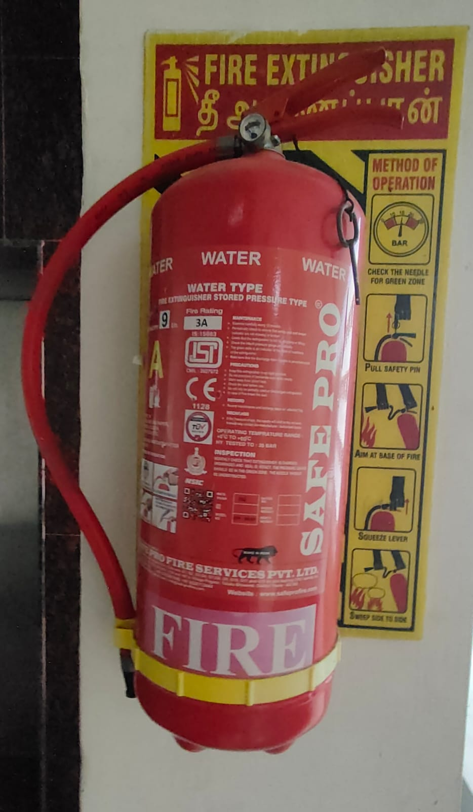

Азаматтық қорғаныс Civil Defense Гражданская оборона и защита
Өрт себептері, өрт кезіндегі әрекеттер және өртсөндіргішті дұрыс қолдану. Causes of fire, what to do during a fire, and how to use an extinguisher correctly. Причины пожаров, действия при пожаре и правильное применение огнетушителя.

Өрт — адамдарға, мүлікке және қоршаған ортаға зиян келтіретін, бақыланбайтын жану үрдісі. Жану пайда болуы үшін бір мезгілде үш шарт қажет — оны «жану үшбұрышы» деп атайды: жанғыш зат, тотықтырғыш (ауадағы оттегі) және тұтану көзі (жылу импульсі). Осы үшеуінің кез келген біреуін жойсаң — жану тоқтайды. Дәл осы қағидатқа барлық өрт сөндіру тәсілдері негізделген: суыту, оттегіні шектеу (тұншықтыру) және жанғыш затты алып тастау. A fire is an uncontrolled combustion process that harms people, property and the environment. Combustion requires three conditions present at once — the «fire triangle»: fuel, an oxidiser (atmospheric oxygen) and an ignition source (a heat impulse). Remove any one of them and combustion stops. Every method of firefighting rests on this principle: cooling, limiting oxygen (smothering) and removing the fuel. Пожар — неконтролируемый процесс горения, причиняющий вред людям, имуществу и окружающей среде. Для возникновения горения необходимы три условия одновременно — «треугольник горения»: горючее вещество, окислитель (кислород воздуха) и источник зажигания (тепловой импульс). Уберите любое из них — горение прекратится. На этом принципе построены все способы тушения: охлаждение, ограничение доступа кислорода (изоляция) и удаление горючего.
Өрттер жанатын заттың түріне қарай кластарға бөлінеді. Класты дұрыс анықтау — қай өрт сөндіргішті қолдану керектігін шешеді. Fires are grouped into classes by the type of burning material. Identifying the class correctly determines which extinguisher to use. Пожары делятся на классы по виду горящего вещества. Правильное определение класса решает, какой огнетушитель применять.
| КлассClassКласс | Жанатын затBurning materialГорящее вещество | Тиімді құралEffective meansЭффективное средство |
|---|---|---|
| A | қатты заттар: ағаш, қағаз, мата, пластикsolids: wood, paper, cloth, plasticтвёрдые вещества: дерево, бумага, ткань, пластик | су, ұнтақты (ОП)water, powder (ОП)вода, порошковый (ОП) |
| B | жанғыш сұйықтар: бензин, май, бояуflammable liquids: petrol, oil, paintгорючие жидкости: бензин, масло, краска | көбік, ұнтақ, CO₂; су БОЛМАЙДЫfoam, powder, CO₂; NOT waterпена, порошок, CO₂; вода НЕЛЬЗЯ |
| C | газдар: метан, пропан, тұрмыстық газgases: methane, propane, household gasгазы: метан, пропан, бытовой газ | ұнтақ; алдымен газды жабуpowder; shut off the gas firstпорошок; сначала перекрыть газ |
| E | кернеудегі электр қондырғыларыlive electrical equipmentэлектроустановки под напряжением | CO₂ (ОУ), ұнтақ; су БОЛМАЙДЫCO₂ (ОУ), powder; NOT waterCO₂ (ОУ), порошок; вода НЕЛЬЗЯ |
| ҚұралMeansСредство | Әрекет қағидатыPrinciple of actionПринцип действия | ҚолданылуыApplicationПрименение |
|---|---|---|
| Ұнтақты (ОП)Powder (ОП)Порошковый (ОП) | ошақты бүркеп, жану реакциясын тежейдіsmothers the seat and inhibits the reactionизолирует очаг и тормозит реакцию горения | A, B, C, E кластарына — әмбебапclasses A, B, C, E — universalклассы A, B, C, E — универсальный |
| Көмірқышқылды (ОУ)CO₂ (ОУ)Углекислотный (ОУ) | оттегіні ығыстырады әрі суытады (−70 °C)displaces oxygen and cools (−70 °C)вытесняет кислород и охлаждает (−70 °C) | кернеудегі электр қондырғылары мен бағалы заттар; раструбты ұстамаlive electrics and valuables; do not touch the hornэлектроустановки под напряжением и ценности; не браться за раструб |
| Көбікті (ОВП)Foam (ОВП)Воздушно-пенный (ОВП) | бетін көбікпен жауып, оттегіні шектейдіcovers the surface with foam, cutting off oxygenпокрывает поверхность пеной, отсекая кислород | A, B кластары; электр мен газға БОЛМАЙДЫclasses A, B; NOT on electrics or gasклассы A, B; НЕЛЬЗЯ на электро и газ |
| СуWaterВода | ошақты суытадыcools the seat of fireохлаждает очаг горения | қатты материалдар (A класы); электр мен мұнай өнімдеріне БОЛМАЙДЫsolid materials (class A); NOT on electrics or petroleum productsтвёрдые материалы (класс A); НЕЛЬЗЯ на электро и нефтепродукты |
| Құм мен кошмаSand & fire blanketПесок и кошма | ошақты бүркеп тұншықтырадыsmothers the seat by covering itнакрывает очаг и перекрывает доступ воздуха | шағын ошақтар, төгілген сұйықтық, жанған киімsmall fires, spilled liquid, burning clothingнебольшие очаги, разлитая жидкость, горящая одежда |
| Өрт краніFire hydrantПожарный кран | жең (рукав) арқылы су ағынын бередіsupplies a water jet through a hoseподаёт струю воды через рукав | дамыған өрттер (A класы); алдымен кернеуді ажыратdeveloped fires (class A); de-energise firstразвившиеся пожары (класс A); сначала обесточить |